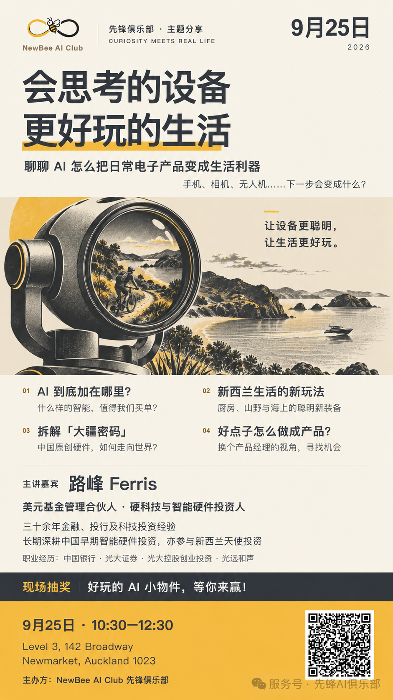

相机不只会拍，还尝试帮你“导”；烹饪机器人，让做饭多一种可能；连钓鱼用的渔轮，也开始变聪明了。骑行、出海、露营、房车——新西兰熟悉的日常，正在被新一代硬件玩出新花样。
如果 AI 走出屏幕，你的日常，会多出哪些可能？
01 · 一份新西兰生活的新硬件清单
从中国创新出发，看看这些新装备怎样融入新西兰生活：从厨房，到山野与海面。
- AI 相机 · 烹饪机器人拍视频、做饭，给熟悉的日常添一点新可能。
- 电助力自行车 · 电动快艇从骑行到出海，看看新装备如何改善体验。
- 智能渔轮 · 智能房车钓鱼、露营与房车生活，也开始有了新玩法。
- 电动化，还是 AI？哪些靠电动化改善体验，哪些真正用到了 AI？我们一起分辨。
02 · 好玩之外，再往里看一层
拆解“大疆密码”
中国原创硬件凭什么走向世界？从需求、体验到市场，做产品、做生意的人能学到什么？
AI 到底加在哪里？
能感知、会交互，更要真的帮人把事做好。什么样的“智能”，值得我们买单？
下一个好产品藏在哪？
换上产品经理的眼光：一个日常小麻烦、一个好玩的点子，怎样变成有人愿意付钱的产品？
03 · 主讲人：Ferris 路峰
硬科技与智能硬件投资人，现任美元基金管理合伙人，拥有三十余年金融、投行及科技投资经验，曾任职于中国银行、光大证券、光大控股创业投资及光远和声。
长期深耕中国早期科技投资，关注半导体、智能硬件、先进制造及科技企业全球化，陪伴创业者从技术创新走向商业化；也参与过多个新西兰早期项目的天使投资。
04 · 带上好奇心就好
如果你喜欢新装备、想看懂好产品，或正在寻找创业灵感，欢迎来聊聊。不需要先懂技术。现场备有精美茶点，边吃边聊，认识新朋友，也碰撞些新想法。
9 月 25 日，带上好奇心，来认识你的下一件心头好。
活动海报与报名
点击报名按钮即可填写；也可以扫描下方海报中的二维码。点击海报可放大查看。

本页根据先蜂AI俱乐部 2026 年 9 月 16 日发布的 K5 预告正文与活动海报整理。活动为预告，非已完成回顾；信息如有调整，以主办方最新通知为准。